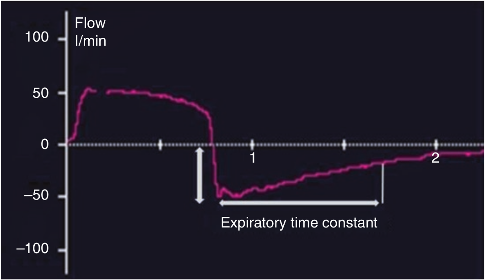

در صورت افزایش مقاومت، بشرط ثابت ماند کمپلیانس و حجم جاری، مقدار حداکثر شدت جریان بازدمی کاهش می یابد و مدت زمان لازم برای تخلیه کامل ریه ها افزایش پیدا میکند. در نتیجه RCEXP بیشتر از ۰/۷ ثانیه میشود.

در صورت افزایش مقاومت راه هوائی:
۱ - حداکثر شدت جریان بازدمی کاهش می یابد
۲ - فشار الاستیک ارتجاعی کاهش می یابد
۳ - شدت جریان بازدمی همیشه به خط پایه می رسد
۴ - RCEXP کاهش می یابد
۵ - بازدم کامل معمولا کمتر از ۵ ثانیه طول میکشد